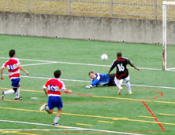
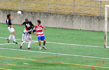
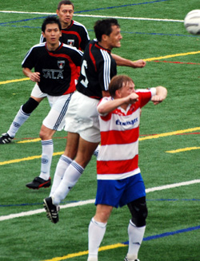
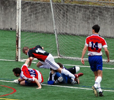

|
OiFuto, Saturday 1st September, ,
“The better team lost today.” Kirk commented to me as the final whistle blew, and in essence he was correct. Sala were the better team on display in terms of possession, passing, pressure and lots of other words that start with p. Unfortunately they weren't the better team in the rather more crucial area of getting the three points.
Not that it was totally unexpected. Since a three nil doing from Hibs on the first day of TML season one, Sala have only once bagged an opening day win, that coming in a frankly bizarre 7v5 victory over BEFC 4 years ago. Add to that the fact that a trip back to TML season one is also required to find the last league victory over the Swiss and it didn't really add up to an auspicious start for Sala.
 That was, until the Swiss took to the field. Featuring numerous, svelte, teenage looking Japanese lads, they looked anything but the fearsome Swiss of yore. Old faces Kirk, Kurt and Dave added some backbone, but Sala smelt a chance of victory.
The first half found Sala in the ascendancy for long periods of time. Brookey worked harder than anyone to get his mangerial career off to a winning start, snarling, biting and generally putting the wind up a few of Swiss's high school kids.
It was down his wing, the right, that most of the play came, Toby and Dhugal linking well with Shigeru, Masa and occasionally Lenny when he wandered forward. Several crisp passing movements and the occasional retention of possession under pressure were a welcome change from the usual 'kick it the way your nose is pointing'. There were chances too. Dhugal just failed to connect with a low centered pass, right at the keepers feet. Ronald who came on midway through the half also couldn't quite get a shot away after Toby's clever centre, and finally Toby himself lobbed the advancing Swiss keeper only to see his effort bounce wide.
 At the other end, Swiss had very little to work with, until a simple through ball allowed the unmarked Kirk to go one on one with Sid, who did well do stop what was certainly the best chance of the half. There appeared to be no danger of anyone scoring then, until lady luck (Who is rapidly in danger of losing the title 'lady', given the way she was carrying on in this game) dealt Ian a crappy hand as he stuck out a foot to block a powerful freekick and could only watch as it flew past the wrongfooted Sid and into the net. Cue the halftime whistle from Jorge.
After all that Sala pressure though, it was, to be fair, as predictable as the final day of a golf tournament which Tiger is leading.
The second half, saw Swiss completely close up shop, leaving Dave Pratt to plough a lonely furrow up-front with an, at times, almost comical lack of support.
Sala threw everything forward, but were rewarded by Miss Luck, trollop that she is, with another own goal from a corner, during a very rare Swiss foray into occupied territory.
A deep corner wasn't cleared or dealt with in any way by Sala, and although nobody seems to know quite what happened, it ended up with Sid putting the ball into his own net. He giveth and he taketh away.
Before that though, Shigeru had hit the bar with a cross, Dan and Toby were involved in a fair old rammy in the box, Tobes had a decent penalty shout and Ronald created a few chances with his industry and energy.
 Sala pushed forward time and time again, but a combination of bad decision making from midfielders, poorly timed runs from the strikers and a well marshaled Swiss offside-trap meant that despite tons of possession in the opposing half of the field, real, goalscoring opportunities were virtually nonexistent.
Just to repeat it again, up to the last third in this match, Sala played pretty damn well. Ian and Dan in particular were excellent and Yusuke had a solid game in midfield.
That was it for Sala though, a familiar feeling at the final whistle and a dreary old Saturday to look forward to.
The usual words of encouragement were offered and accepted, but nobody could hide the fact that this was a huge opportunity missed, and once again it was caused by a lack ruthlessness.
Report by Lethargio
|